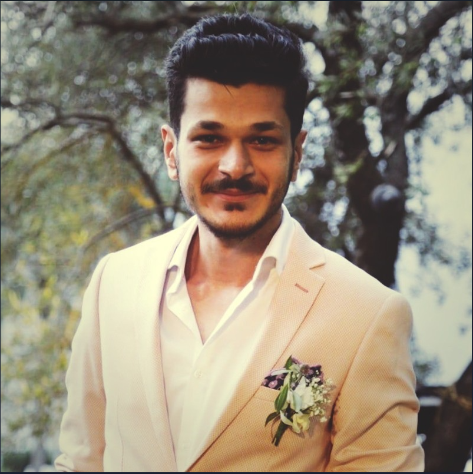

Ghaith Shams Eddin
Phone: +905395027094
Email: gshamseddin97@gmail.com
Gaziantep, Turkey

Experience
Enka Hijyen
Export Sales Executive
-
Conduct surveys and market research to study and analyze the changing needs of the customers.
- Develop plans and strategies by coordinating with the managers to achieve the sales target.
- Ensure that the products are made available to suit the needs of the customer and by adhering to the sales
processes designed to improve the sales.
- Maintain trustworthy professional relationship with the existing as well as the prospective clients.
- Select, analyze and validate the vendors' requirements and maintain and update the database related to it.
TUBITAK
Intern-Temperature Laboratory (National Metrology Institute)
-
Responsible for day-to-day operations of various heating systems and experiments, as well as contributing highquality
ideas and insights into existing problems.
- Routine testing, calibration, and monitoring of equipment.
- Analysis and interpretation of testing result data.
- Troubleshooting when results fall out-with the expected ranges.
- Research test standards and creating test plans based on the needs of our customers.
- Program and verify high level equipment parameters for testing.
- Measurement of hot surface ignition temperatures.
- Designing and testing computer structures.
- Coding and debugging.
- Troubleshooting system errors.
- Profiling and analyzing algorithms.
Education
Gaziantep Univeristy
Bacehlor of Science in Physics Engineering
Projects
- ChargEndless (Start-Up Project funded by the European Union)
The project is to invent a mobile charger (power-bank size) that works with the continuous movement of the builtin
magnetics. The mobile charger does not need electricity to be charged nor batteries.
- Nano-Magnetic Materials and Their Applications (Graduation Project)
The project focuses on the magnetic nanoparticles and its important role in the rapidly developing branches of
science specializing in the study of objects (existing in nature or, more often, artificially produced) with Nano-sized
structural blocks.
Skills
- C++
- MATLAB
- Visual Basic for Applications (VBA) - Excel
- Microsoft Office
- Time-management and organization
- Python
- Team working
- Problem solving
- Research and data analysis
- Communication
- Information Technology (IT)
- Web Development
Courses
- Foundation and Idea Generation (2018)
- Economic Empowerment (2018)
Languages
- TOMER Certificate (2017)
- TOEFL IBT Certificate (2017)
- IELTS Academic Certificate (2023)